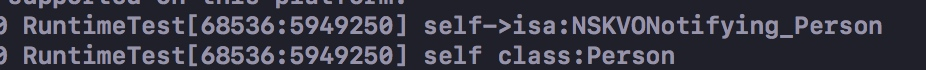
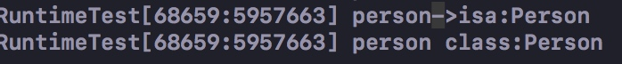

之前对于KVO的实现，都仅仅限于修改了对应属性的set方法的实现，使得在该方法使用前与使用后分别触发不同的方法。现在作者想仔细的看一下具体的细节
打印一下基本信息
说是实现的对方法的替换，那实际上是怎么做到的呢？
```
Person *person1 = [[Person alloc] init];
Person *person2 = [[Person alloc] init];
NSLog(@"添加观察前两个对象的实例 %@, %@ ", person1, person2); //打印实例的地址
NSLog(@"添加观察前两个对象的类 %@, %@ ", [person1 class], [person2 class]); //使用class方法获取类
NSLog(@"添加观察前，两个对象的类 objc_getClass:%@, %@", object_getClass(person1), object_getClass(person2));//使用objc_getClass 获取类
[person1 addObserver:self forKeyPath:@"name" options:NSKeyValueObservingOptionNew context:NULL];
NSLog(@"添加观察后两个对象的实例 %@, %@ ", person1, person2);
NSLog(@"添加观察后两个对象的类 %@, %@ ", [person1 class], [person2 class]);
NSLog(@"添加观察后两个对象的类 objc_getClass:%@, %@", object_getClass(person1), object_getClass(person2));
输入的结果：

由以上的结论可以知道几件事情：
1.添加KVO之后，实例对象的地址并没有发生改变
2.添加KVO之后，`[instance class]`获取元类依旧指向person， 但是`object_getClass(instance)`来获取元类则是NSKVONotifying_Person。其中`class`方法拿到的是一个假的结果。`object_getClass`返回的才是一个真正的类型。
## 打印一下具体的IMP
那既然已经知道KVO机制本身是修改了观察元素的IMP，也就是具体的实现，我们打印一下具体的IMP究竟是否发生了改变
Person *person1 = [[Person alloc] init];
Person *person2 = [[Person alloc] init];
SEL sel = @selector(setName:);
IMP imp1 = [person1 methodForSelector:sel];
IMP imp2 = [person2 methodForSelector:sel];
NSLog(@"添加观察前的的Imp分别是 person1: %p, person2: %p", imp1, imp2);
[person1 addObserver:self forKeyPath:@"name" options:NSKeyValueObservingOptionNew context:NULL];
imp1 = [person1 methodForSelector:sel];
imp2 = [person2 methodForSelector:sel];
NSLog(@"添加观察后的Imp分别是 person1: %p, person2: %p", imp1, imp2);
最后的输出：

可以看到，person1在属性name添加了KVO之后，其set方法的IMP发生了变化。
结论： 对于属性添加KVO方法后， 其具体的实现会发生改变。
## 继续探究一下， imp发生了哪些变化
在上方代码段的结尾处添加了断点，进行输出打印

结论：
添加KVO后，属性的set方法变为`_NssetObjectValueAndNotify`方法。
而未添加KVO的属性的set方法依旧是 `setName:`
## NSKVONotifying_Person与Person的关系
从上面得到的结论是， person的实例在添加了KVO后，其元类型变为`NSKVONotifying_Person`,那么当前这两个类到底是什么关系呢？
在代码段的最后添加如下代码：
NSLog(@"%@ 的父类型为 %@", object_getClass(person1), class_getSuperclass(object_getClass(person1)));
NSLog(@"%@ 的父类型为 %@", object_getClass(person2), class_getSuperclass(object_getClass(person2)));
打印后的结果表示

结论： 添加KVO后新生成的NSKVONotifying_Person为 person的派生类。
那么最终生成这个新的派生类与原来的Person又有什么不一样呢？
在代码段最后添加
NSString *list1 = [self printPersonMethods:object_getClass(person1)];
NSString *list2 = [self printPersonMethods:object_getClass(person2)];
NSLog(@"%@", list1);
NSLog(@"%@", list2);

最终输出的结果是

可以看到，在派生类中`NSKVONotifying_Person`多了几个方法。其内部也有一个setName：的方法，应该是重写了其父类`Person`中的setName：方法。
重写了dealloc是为了做一些KVO相关的内存释放的操作
重写class方法是隐藏了NSKVONotifying_Person这个类的存在。让外界以为依然是Person相关的类。
## KVO添加以及取消时候的isa指针
Person *person = [[Person alloc] init];
[person addObserver:self forKeyPath:@"name" options:NSKeyValueObservingOptionNew|
NSKeyValueObservingOptionOld context:NULL];
NSLog(@"person->isa:%@",object_getClass(person));
NSLog(@"person class:%@",[person class]);
```

那么有一个问题是， class方法和object_getclass方法都应该是获取元类的方法，有什么不一样的？为什么获取的结果不一样呢？
class 本身也是获取实例元类型的方法，但是在实现时KVO时，class的方法被底层改写， 因此看到的会依旧指向原生的类。
取消KVO之后，看一下最终效果
[person removeObserver:self forKeyPath:@"name"];
NSLog(@"person->isa:%@",object_getClass(person));
NSLog(@"person class:%@",[person class]);

此时可以看到，输出的结果中，两个方法都变成了person
分类中新添属性的KVO
通常，如果希望在category中添加属性时， 会使用基于runtime的关联值的方式进行实现。使用objc_getAssociatedObject,objc_setAssociatedObject这两个方式来实现get和set方法。
那么对于这种情况实现的属性，在进行KVO时，能否正常的获取呢？答案是可以的。
@implementation Person (Category)
static char *CloudoxKey = "CloudoxKey";
-(void)setCloudox:(NSString *)cloudox{
objc_setAssociatedObject(self, CloudoxKey, cloudox, OBJC_ASSOCIATION_COPY_NONATOMIC);
}
-(NSString *)cloudox{
return objc_getAssociatedObject(self, CloudoxKey);
}
@end
//在调用的viewController中
[person addObserver:self forKeyPath:@"CloudoxKey" options:NSKeyValueObservingOptionNew|
NSKeyValueObservingOptionOld context:NULL];
person.cloudox = @"11";
person.cloudox = @"22";
//输出代码
- (void) observeValueForKeyPath:(NSString *)keyPath ofObject:(id)object change:(NSDictionary<NSKeyValueChangeKey,id> *)change context:(void *)context {
if([keyPath isEqualToString:@"CloudoxKey"] || [keyPath isEqualToString:@"age"] ){
NSLog(@"\\noldnum:%@ newnum:%@",
[change valueForKey:@"old"],
[change valueForKey:@"new"]);
}
}
总结
- iOS中的KVO是是基于runtime的
- 某个类的属性首次添加KVO后，会生成一个派生类
NSKVONotifying_类名。在派生类中重写被观察的属性的set方法，以此来实现真正的通知。新的类也重写的销毁以及class方法，用于掩护派生类的存在 - 对象第一次被观察后，该对象的
isa指针会指向新生成的派生类。从而确保被监控的属性值发生改变时，调用的是派生类的setter方法。 - 使用关联值的方法在分类中实现属性，在赋值时是可以触发KVO的。
参考文档
https://www.jianshu.com/p/0aa83ac521ba
https://www.jianshu.com/p/dc89f0a2d1ac